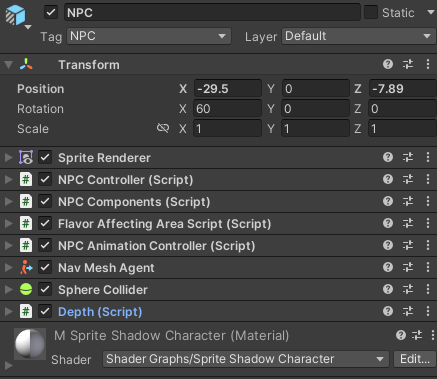
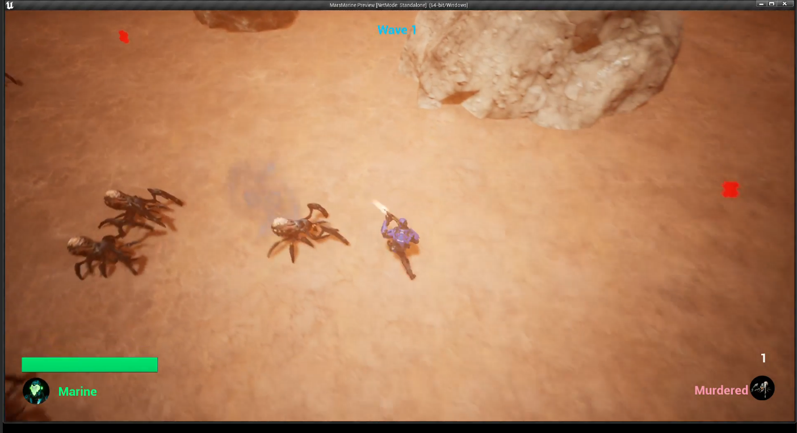

BitterSweet using Unity URP
No 1 About Project
Bittersweet takes place in a magical world, where everything is dependent on flavors.
The objective is to find the umami flavor and bring balance to the world.
The whole project is done in
Unity 3D using Unity version 2021.3.23f1.
Our core mechanic is called flavor alchemy, which consists of four flavors: bitter, sweet, sour and salty. Players can leverage these flavors to shape the narrative, handle combat and abilities, solve puzzles, and engage in crafting to support various game mechanics. This 2.5D narrative game falls within the role-playing and adventure genres, catering to an audience aged 12 and above. I really like RPG games and mostly play those games and was hyped to work in one.

No 2 The Process
The game originated as a project within the 'Xbox Game Camp, Sweden' and later transitioned into our
Master's program as coursework. It initially served as a Proof of Concept (POC) during the Xbox camp,
demonstrating its viability. Following its success, we undertook a significant code revamp,
aiming to enhance the game's scalability. As the Lead Programmer,
I played a key role in the game's development.
The latest version, 0.0.3a, reflects our ongoing efforts and progress.
No 2.1Inital research
-
Before kicking off the project, I delved into our old code and noticed it was highly coupled.
Recognizing the importance of scalability, I proposed taking a month to refactor the code,
ensuring it would be easily scalable and accommodating for new features.
-
In my exploration of design patterns in Unity, I encountered several options.
While initially intrigued by the Entity Component System (ECS), after two weeks of experimentation,
I found it challenging, requiring a significant shift in coding perspective. Consequently,
I opted for the Observer pattern, ensuring zero coupling between classes,
although acknowledging its potential impact on performance. In order to mitigate performance impact,
I explored Render Pipelines and opted for the Universal Render Pipeline (URP),
known for its performance benefits and less intensive graphics.
Given our game's 2.5D nature, URP seemed fitting for our needs.
No 2.2Game and Gameplay Programming
- For gameplay, I ensured a streamlined approach by consolidating player-related elements into a single prefab. This prefab included a controller, UI, sound, and animation scripts.The controller takes charge of managing all input-related events and certain trigger events in the game.
-
Regarding the UI, its script exclusively contains functions related to UI operations.
Here, the controller sends an event message (utilizing the observer pattern,
where a listener is attentive to the event), triggering the execution of UI functions.
-
The same pattern is followed for animation and sound functionalities.Moving to NPCs,
each had a prefab at a higher level, and individual NPCs were variants of this prefab with unique properties.

-
In terms of gameplay, each NPC had dedicated scripts where variables from the Dialogue Interpreter
(which was done by another programmer) determined specific actions. Variables in the Dialogue Interpreter are set
based on the chosen dialogue, generating an event that triggers gameplay actions which are written in the gameplay scripts(ElkmanGP in Fig.2.1.3).
These variables are attached to both the NPC and the MainCharacter prefab.
Fig.2.1.1
Fig.2.1.2
Fig.3
-
A Game Manager script handled common functions for the game,
while the Dialogue Interpreter managed quests and objectives.
Upon quest completion, it sent an event received by the Game Manager for further handling.
No 2.3Level Designing and Programming
-
I received the map design from the artist and was responsible for placing various elements like buildings,
characters, trees, objects, and foliage.

-
I have implemented dynamic features such as trees, buildings, and stones changing flavor when they are bitter,
salty, sour and sweet.
This feature will be extended in future updates.
- I implemented day and night cycles, incorporating a light script to handle lighting transitions between day and night. Additionally, I created an editor script that automatically categorizes newly added lights as spot/point lights or directional lights.

- I implemented object fading to enhance player visibility when they are positioned behind trees, buildings, and stones.

- I added dynamic shadows by creating a specific shader for 2D objects. This ensures they consistently emit shadows, and their sorting order is dynamically updated, giving the perception that the main character belongs to the game environment.
- As an extension of flavor-changing objects, the environment surrounding an NPC now dynamically changes according to the flavor.

No 2.4Animation, Effects and UI Programming
-
I developed code for flavor exchange, although it felt a bit clunky.

Fig.2.4.1
-- The concept was to use the Transforms of FlavorStartPoint(Fig.2.4.2) of MainCharacter to FlavorEndPoint of NPC(Fig.2.4.3) and trigger the animation if the flavor is given to the NPC and for Take flavor the vice versa.Fig.2.4.2

Fig.2.4.3
- I successfully implemented character walk animations and achieved the flavor change of trees using shaders, incorporating a variable for smooth color transitions.
- In the Effects department, I introduced a glitter particle system to infuse a magical feel into the game.
- I not only added most of the UI functions but also strategically placed them on the screen because I had experience in Frontend Development which is related to User experience.
- I played a key role in designing the hint system UI, discussing ideas with the team and implementing them.
- We also collaborated on the tutorial design, and I took charge of implementing the UI functionalities along with animations.
No 2.5Technical Management
No 3 Roles
- Lead Programmer
- Game and Gameplay Programming
- Level design and Programming
- Animation,Effects and UI Programming
- Technical Management
No 4 Requirements
- PC
Requirments necessary to play the game
No 5 GIt Link:
No 6 Game Link:
No 7 More Projects
-
 Hand Rehab game
Hand Rehab game
- Mars Marine
-
 ARBasketball
ARBasketball
-
 Ninja Game
Ninja Game
- I implemented day and night cycles, incorporating a light script to handle lighting transitions between day and night. Additionally, I created an editor script that automatically categorizes newly added lights as spot/point lights or directional lights.